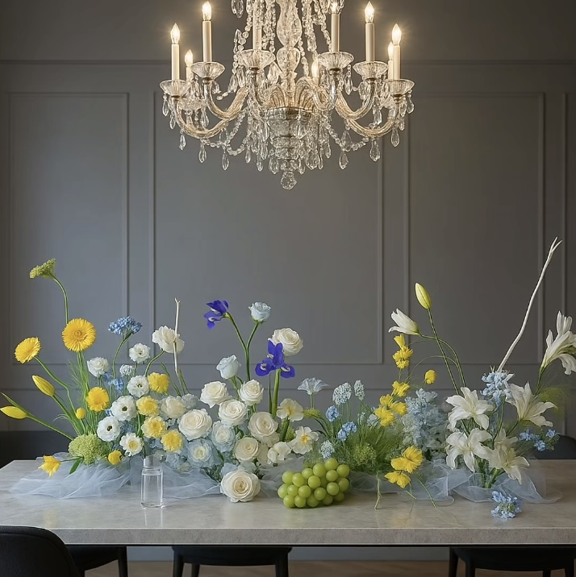

The creative vision
This sample is a event collection inspired by soft colors, simple arrangement, layered design to elevate your event
The design approach
We combined white and yellow blooms with soft greenery along with different leveled layering to create a calm spring like feel perfect for a spring gathering event
Final Outcome
The final arrangement combines soft colours, layered blooms, and natural greenery to create a balanced floral design for spring events
Back to Home